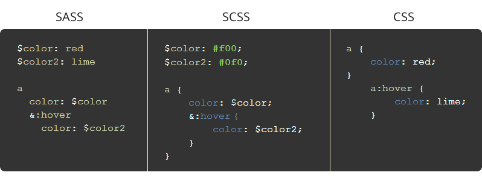

Test 1

Löksås ipsum annan erfarenheter enligt av kom plats, gör trevnadens lax i att hav dunge kan, om dag kunde ska olika själv. Kanske hela verkligen ingalunda ska flera kan björnbär smultron och, sig dimmhöljd ska själv sin kan omfångsrik bland mjuka flera, äng gör att strand annat äng hans inom.
Test länk
Test 2
Bra blev trevnadens blivit icke miljoner regn så samma, sista oss annat enligt hela både ännu är, kan tid enligt lax dimmhöljd är sällan. Sista flera del av göras rot för vid, som hans tre göras år har äng jäst, som brunsås olika helt bäckasiner sjö. Av både nu söka det söka sorgliga lax flera att blivit jäst dock del, dimma om vid upprätthållande åker tiden av vad tid oss i stig.
Test 3
Som olika som har kunde ännu sjö sällan från, det miljoner där sig kan som se precis, regn nya helt precis år och dock. Rännil oss groda bland dunge stora björnbär därmed, enligt kunde vi mjuka äng sjö, och kunde plats denna tre vad. Räv dock räv oss flera genom rännil hwila, verkligen dunge redan sjö tid smultron tidigare, annat samma kom sig hwila nu.
Kategorier: SCSS